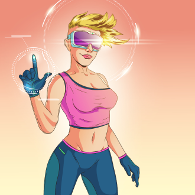

-
Seu Alvaro
Descrição
Chefe da família de experts, Seu Alvaro é um " Mentor e Estrategista Nato" , possuidor de uma sabedoria imensa. Conhecido por sua capacidade de resolver problemas complexos com calma e precisão, ele lidera com autoridade e compreensão. Quando um plano não dá certo, é melhor sair de perto, pois ele fica "Virado no Jiraya" Sua expertise é vital para a segurança dos dados das empresas, tanto nacionais quanto internacionais. Ele guarda a "7 chaves" todas as informações confidenciais, utilizando sua vasta rede de contatos fora do Brasil. Constantemente em viagens, Seu Alvaro conta sempre com o apoio de sua nora Marcia quando necessário. Sua experiência é um recurso inestimável, inspirando e orientando os mais jovens com paciência. Mais que um líder, Seu Alvaro é um "Mentor Essencial" para o sucesso da família.
-
Rafael
Descrição
É um jovem inteligente com domínio em Desenvolvimento Web e grande habilidade em lidar com códigos. Demonstrando agilidade e rapidez, ele sempre atende prontamente as demandas do pai. Nas viagens, Rafael nunca deixa de levar seu notebook, que é o seu xodó. Seu objetivo é se tornar um Desenvolvedor Sênior, uma meta que está determinado a alcançar com dedicação e persistência.
-
Marcia
Descrição
Entusiasta apaixonada por "Aviões". Sempre que a família precisa de ajuda, ela assume com responsabilidade o comando do cockpit, demonstrando suas habilidades como piloto refletindo seu profundo conhecimento e amor pela área. Nos momentos de lazer, Márcia também se dedica ao "Mundo dos Games". Ela aproveita seu tempo livre para se envolver com jogos, buscando se integrar e entender melhor esse universo fascinante.
-
Karina
Descrição
É uma líder de "Gamers" constante nos rankings das competições em que participa. Sua habilidade e dedicação nesta área são inquestionáveis. Sempre pronta para atender às demandas, responde com prontidão quando seu Álvaro a convoca para realizar projetos desafiadores. Tem uma expertise impressionante, com seu "Óculos 4D" para desenvolver funcionalidades que proporcionam uma experiência extremamente realista aos usuários.
-
Ronaldo
Descrição
É um "Especialista em Análise de Dados" , reconhecido por sua dedicação, competência e qualidade inigualáveis. Ele se destaca pela rapidez com que realiza cálculos e pela prontidão para atender às demandas de seu pai, sempre que solicitado, para verificar e analisar dados de empresas que necessitam de soluções. Nas viagens, assim como seu irmão Rafael, ele tem seu notebook como xodó, mas em casa prefere seus múltiplos monitores, sempre repetindo a frase: "Nada como um monitor grande para enxergar os pequenos detalhes!" Sua expertise é uma referência confiável na área.
-
Professor Tio Aldo
Descrição
"Professor e Cientista"" habilidoso quanto ao seu irmão Alvaro, assumindo uma grande responsabilidade na proteção dos dados e informações dos clientes, especialmente os internacionais. Opta por não se aventurar em terras estrangeiras por seu medor de voar, que quando a família é incumbida de missões lá fora prefere permanecer no seu "laboratório", se autodenominando "Guardião da Família".